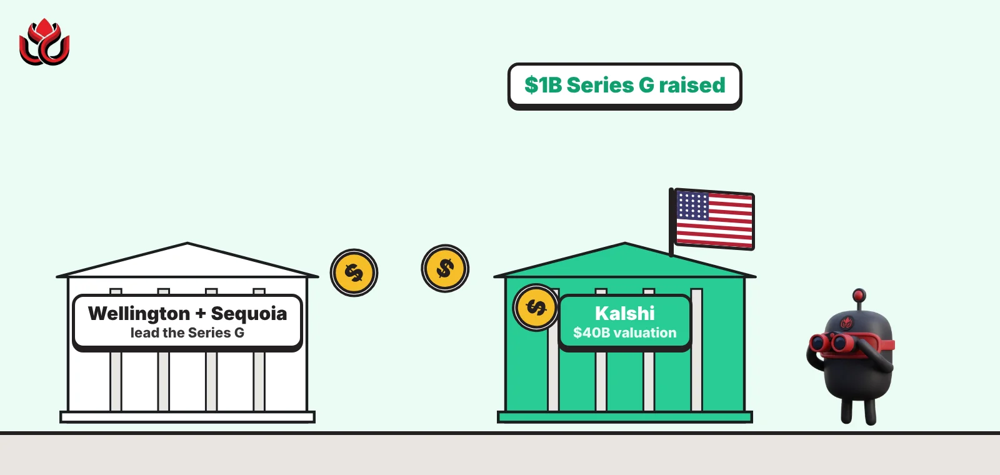
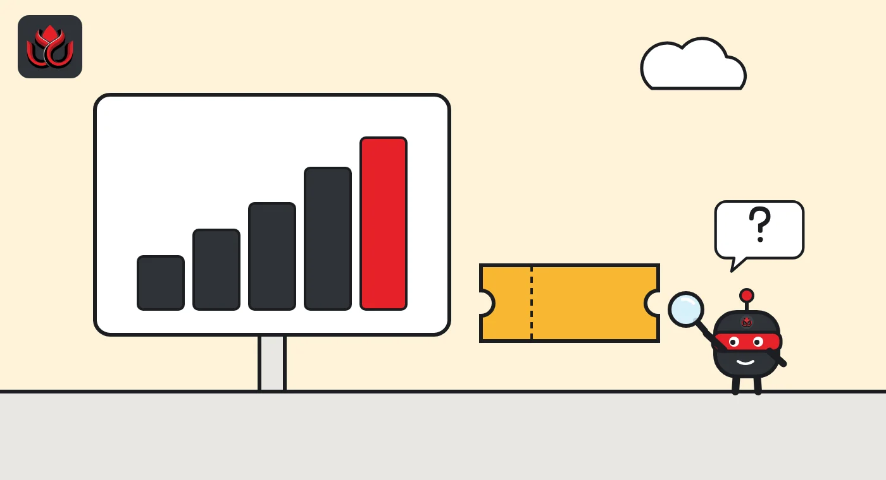
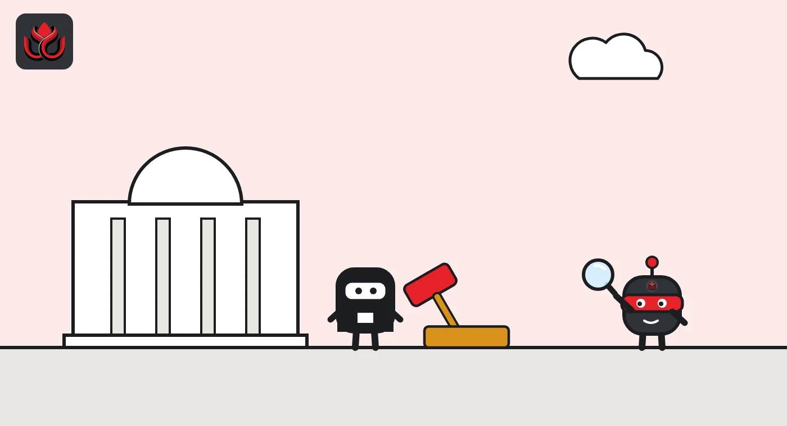

Kalshi raises $1 billion at a $40 billion valuation. Can it outrun the states?
The prediction market says it now runs at more than $1 trillion in annualized volume and wants to sell perps, indices and compute markets. Two days earlier, its federal regulator sued Utah to stop the state from shutting such markets down.

Key points
- Kalshi raised $1 billion at a $40 billion valuation on October 29, 2026, co-led by Wellington and Sequoia.
- It claims over $1 trillion in annualized volume, over 30 million accounts and more than 75% of all prediction market volume.
- Two days earlier, the CFTC sued Utah to stop the state from shutting down federally registered prediction markets like Kalshi's.
The deal
Kalshi, the US prediction market where people trade yes-or-no contracts on real-world events, said on October 29, 2026, that it had raised $1 billion in a Series G round. The deal values the company at $40 billion after the new money comes in, according to Kalshi's announcement.
Wellington and Sequoia co-led the round. Kalshi listed Baillie Gifford, Stripes, Andreessen Horowitz, Coatue, Layer Global, Morgan Stanley Investment Management, Sequoia Global Equities, CapitalG, Hudson River Trading and Balyasny Asset Management as co-investors.
Kalshi framed the raise as a step toward "building the next-generation financial exchange." The company did not say how much of the round was new primary capital versus shares bought from existing holders, and it did not mention an IPO.
Kalshi's own growth numbers
Kalshi used the announcement to publish growth figures. All are the company's own and most are stated on an annualized basis, meaning recent activity projected over a full year.
- More than $1 trillion in overall annualized trading volume.
- More than $1 billion in annualized revenue from non-sports markets alone.
- Commodities passed $100 million in annualized trading fees in about three months.
- Crypto markets run at $140 billion in annualized volume, politics at more than $8 billion.
- International retail, launched a year ago in more than 140 countries, is close to $100 million in annualized fees.
- More than 30 million accounts and over 75% of prediction market trading volume.
Kalshi also said its perpetual futures, contracts with no expiry date, have done $83 billion in volume with more than 500,000 traders since launch a few months ago. About 500 institutions were active in September, and firms other than market makers made up about a quarter of exchange volume.
Kalshi annualized volume by segment (company figures)
US$ billion
Source: Kalshi, Series G announcement (October 29, 2026). Self-reported; perps figure is cumulative since launch.

Where the money goes
Kalshi said the cash will go into four areas. First, more growth in its core exchange and prediction markets. Second, sales and products for institutions such as hedge funds, trading firms and banks. Third, new products: indices, single-stock perpetual futures and markets on computing power. Fourth, expansion abroad, with Latin America and Europe named as priorities.
The company listed its partners, among them Interactive Brokers, Marex, Clear Street, Cantor Fitzgerald, S&P, Nasdaq, Stripe, Public.com, Plus500, Wealthsimple, Alpaca, PayPal and Block. Several of these are brokers and apps that show Kalshi markets to their own customers, which is how the company reaches users beyond its own app.
Perps are a new direction for a company built on yes-or-no contracts. These contracts never expire and can carry heavy leverage, which makes them closer to what crypto exchanges sell than to a classic prediction market. Single-stock perps would push Kalshi further toward the business of traditional futures exchanges.
The fight with the states
The raise landed during a fight between Washington and the states over who regulates prediction markets. On October 27, two days before Kalshi's announcement, the Commodity Futures Trading Commission (CFTC), Kalshi's federal regulator, sued Utah. The CFTC wants to stop the state from using its own laws to shut down CFTC-registered markets, after Utah brought civil enforcement actions in state court against such markets and other businesses.
The CFTC argues that federal law preempts state rules here. Chairman Michael Selig said that "Utah seeks to shut down prediction markets across a wide variety of markets." The agency said it has also started legal proceedings against nine other states and filed briefs in four federal appeals courts and one state supreme court. The CFTC release does not name Kalshi.
The CFTC is also trying to settle the question by rule. On October 9 it proposed adding event contracts, including sports, political, cultural and weather contracts, to the legal definition of a swap. That would put them more clearly under federal oversight. Comments are due 30 days after the proposal is published in the Federal Register.

Timeline
CFTC proposes treating event contracts as swaps
CFTC sues Utah to block state enforcement against CFTC-registered markets
Kalshi announces $1 billion Series G at $40 billion
LC Insight analysis
This section is our reading of the facts above, not a statement of fact.
- We think investors are buying a future multi-asset exchange, not a betting app. Perps, indices and compute markets are the story here, and sports volume pays for the trip.
- The Utah fight raises the pressure for a court ruling or a final CFTC rule on who regulates sports contracts. Until then, every new state action threatens Kalshi's biggest revenue line.
- Treat the trillion-dollar figure with care. It is annualized, self-reported and counts each contract at face value. It measures activity, not money at risk.
What's next
- The court's handling of the CFTC lawsuit against Utah
- A final CFTC rule on event contracts as swaps
- Launch dates for single-stock perps and S&P-linked indices
- Any IPO filing; the company has not announced one
Disclaimer. This article is based on public information and the sources listed below as of the update time shown. It is for information only and is not investment, legal or tax advice. Figures may change as companies and authorities publish new data.